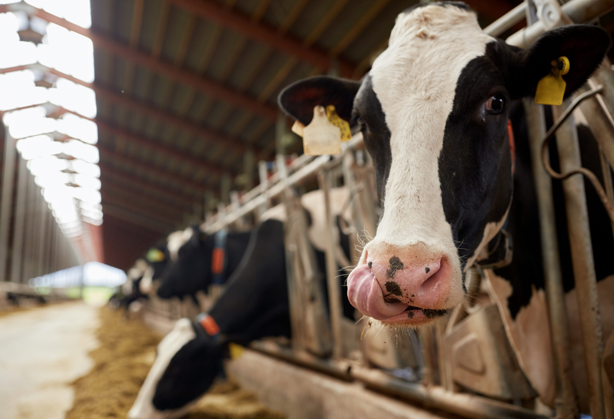

Importance to Wisconsin
Today, Wisconsin is home to more than one million dairy cows and a growing segment of goats and sheep. Dairy production is by far the largest agricultural sector in the state, generating $43.4 billion annually for Wisconsin’s economy. There’s no other land where the dairy industry is more vital, supported and understood.
- Dairy farms produce half of Wi's $104.8 billion agricultural economy.
- Wisconsin is home to several farmer-led conservation programs, such as UW-Discovery Farms, that look to solve environmental challenges and improve farming practices.
- Today our state is home to nearly a quarter of the nation's total dairy farms, 95% of which are family owned.
- Wisconsin is #2 in nationwide milk production, generating 2.44 billion pounds of milk per month.
- Wisconsin makes 48% of the specialty cheese in the U.S.
History
In the early 1600s immigrants brought cattle with them from Europe to supply their families with dairy products and meat. Although many different breeds of cattle including Durhams, Ayrshires, Guernseys, Jerseys, and Brown Swiss were imported through the next few centuries, it was not until the late 1800s that cattle breeds were developed specifically for dairy purposes.
American Dairy Industry- Modern dairy farming began in the early 1900’s after pasteurization was developed and utilized widely.
- Most dairy farms are owned and maintained by families and have been for generations
- Milk was sold directly by farmers, or delivered by the milkman in glass bottles.
- The need to mass produce and improve quality came when people began moving into cities in the late 1800s.
- Today the dairy industry provides more than just milk and dairy products, it also produces nearly 900,000 jobs in the United States.